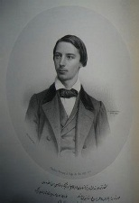

1842 Paris doğumlu Charles Vernay[36] adında bir Fransız çocuk tarih kitaplarından Türkleri çok sevmiş ve hiçbir Türk’ü tanımadan kendi gayretiyle Türkçe öğrenmişti. Aruz vezniyle şiirler yazarak “Dîvân-ı Verne” adlı bir divan oluşturan ve kendini Fransız, İtalyan, Türk ve İranlı şair olarak nitelendiren Vernay, 1858 yılında bu divanını dönemin padişahı Abdülmecit’e ithaf ederek bastırmıştı. Bu padişahın şanına bir de kaside kaleme alarak İstanbul’a göndermiş olan Vernay zaman henüz on altı yaşında bulunuyordu.
Vernay henüz on dört yaşındayken Latince, İtalyanca, İspanyolca, İngilizce, Almanca, Yunanca ve Yahudi dillerinin yanı sıra Arapça, Farsça ve Türkçe öğrenmiş ve İtalyanca, Farsça ve Türkçe şiirler yazmıştır. Vernay’ın henüz on altı yaşında litografi usulü ile Paris’te bastırdığı Türkçe ve Farsça şiirleri sonradan, 2000’li yıllarda Türk araştırmacılar tarafından ele alınmıştır. Vernay’ın dîvânı, 112 sayfadan ibaret olup; uzun bir önsözle birlikte, Türkçe ve Farsça şiirlerden oluşmaktadır. Vernay Dîvânı üzerine yapılan bir çalışma Azerbaycan Bakü’de bulunan Qafqaz Üniversitesi, Türk Dili ve Edebiyatı Bölümü’nde yüksek lisans tezi olarak, Prof. Dr. Ömer Okumuş danışmanlığında hazırlanmış ve Seter (Seher) Durmaz tarafından “Şarl Verne Divanı İnceleme – Metin – Sözlük” adıyla yayına hazırlanmıştır. 2010’da Salkımsöğüt Yayınevi tarafından basılan “Dîvân-ı Verne” adlı kitap ise Serhan Alkan İspirli tarafından hazırlanmıştır. Dr. İspirli, Atatürk Üniversitesi Kazım Karabekir Eğitim Fakültesi Türk Dili ve Edebiyatı bölümünde öğretim üyesidir. Kitabın üçüncü bölümü Charles Vernay’ın “Dîvân-ı Verne” adıyla hazırladığı kitabın transkripsiyonudur.
Bu olağanüstü şairin şiirlerinden bir örnek de şöyle:
Hikmet-i aşkda üstâdım ben
Manzar-ı hayret-i Bağdâdım ben
Emr-i hattı rakam-ı kilkimdir
Kâtib-i Hüsrev-i bî-dâdım ben
Subh u şâm eşk-feşânlıkdır işim
Nâzım-ı hâtır-ı nâ-şâdım ben
Gurbet-i hicre bu dünyâda gelip
Müsteşâr-ı sefer-i yâdım ben
Yazdı Verne bu gazelde hâlin
Dedi sevdâ ile ber-bâdım ben.

Fransız şair Charles Vernay (1842 - 18??)